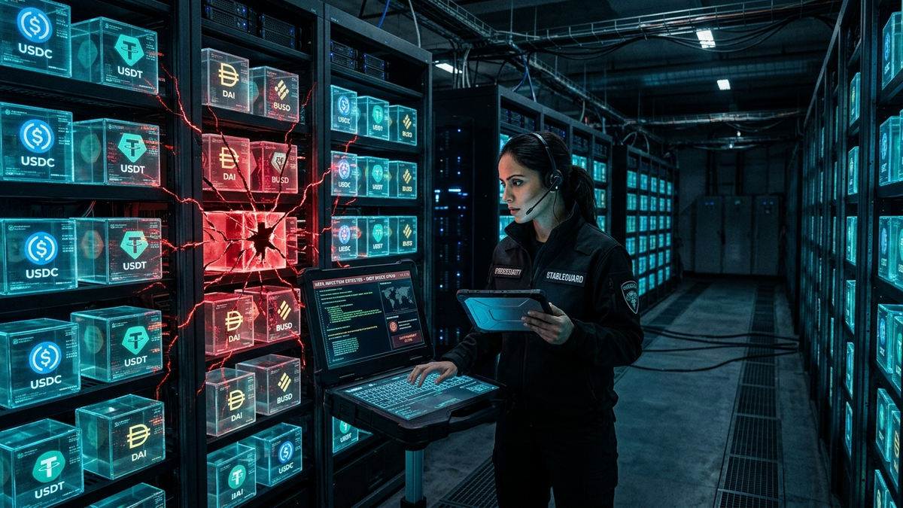

Alright, let's cut the crap. You've heard stablecoins are the holy grail: the stability of the US dollar with the speed and freedom of crypto. It sounds great, and for the most part, it is. But here's the brutal truth most people ignore until it's too late: your "stable" digital dollars are sitting in one of the most hostile environments on the planet. I've spent 15 years cleaning up the digital wreckage of people who thought "safe" meant "invincible." It doesn't.
Parking your money in a stablecoin isn't like putting it in a savings account. It's like parking a truck full of cash in a city with no laws, no cops, and a lot of very clever thieves. Every platform, every smart contract, and every link you click is a potential point of failure that can send your net worth to zero in seconds. This isn't a guide to get rich. This is a battle-hardened survival manual to make sure you don't get wrecked. Pay attention.
Before you can protect your assets, you need to know what you're fighting. In my world, we call this "threat modeling." For you, it's knowing the three monsters hiding under your bed. If you don't understand these, you're just gambling, not investing. Every major stablecoin disaster, from Terra/UST to the latest DeFi hack, falls into one of these three categories.
First is De-Pegging Risk. This is the big one. A stablecoin is only useful if one coin equals one dollar. When it "de-pegs," that promise breaks. The most catastrophic example was Terra's UST. It was an "algorithmic" stablecoin, meaning complex code, not real-world assets, was supposed to keep it at $1. It was like trying to build a skyscraper out of math instead of steel. When the market panicked, a "death spiral" kicked in, and the whole $40 billion system evaporated in days. Fiat-backed coins like USDC can also briefly de-peg during market chaos if there's a run on the bank, but because they have real dollars in reserve, they typically recover. The lesson is simple: the mechanism that maintains the peg is the coin's single most important feature, and algorithmic ones have proven to be the most fragile.
Second is Smart Contract Risk. This is the ghost in the machine. When you use your stablecoins in a DeFi protocol to earn yield, you're not giving them to a person; you're locking them inside a "smart contract," which is just a program running on the blockchain. A smart contract is like a vending machine made of code. But what if a clever hacker finds a bug that lets them get all the snacks for free? That's a smart contract exploit. Your funds are gone, and there's no one to call. Multi-billion dollar platforms have been drained because of a single misplaced line of code. This is why you never, ever interact with a protocol that hasn't been professionally audited by multiple top-tier security firms.
Finally, there's Platform & Custodial Risk. This is the most classic and painful risk of all. It's trusting the wrong people. When you leave your stablecoins on a centralized exchange like Binance or a lending platform like the now-bankrupt Celsius or FTX, you do not own them. The platform owns them; you just have an IOU. If they get hacked, go bankrupt, or their CEO decides to buy a private island with customer funds, your money is gone. This is the origin of the crypto mantra: "Not your keys, not your crypto." If you don't control the private keys in your own wallet, you are trusting a third party not to screw up. History has shown, repeatedly, that this is a terrible bet to make with significant capital.
Not all stablecoins are created equal. Choosing the right one is your first and most critical line of defense. Think of it like choosing between a military-grade armored truck and a rusty station wagon to transport your cash. Both will get you down the road, but only one will survive an attack. Your choice here directly impacts your exposure to the risks we just discussed, especially de-pegging risk.
The current kings are the Fiat-Collateralized stablecoins. The two giants here are USDC (USD Coin) and USDT (Tether). The concept is dead simple: for every one coin in circulation, there is supposedly one dollar's worth of real assets (cash, U.S. T-bills, etc.) held in a bank account. USDC, issued by Circle, is widely considered the safer, more transparent option. They are U.S.-regulated and publish monthly attestations from reputable accounting firms, so you can see the reserves are there. USDT, on the other hand, has a more checkered past with regulators and has been less transparent about its reserves. However, it's the biggest and most liquid stablecoin, making it unavoidable in many parts of the crypto world. A smart approach is to use both but lean more heavily on USDC for long-term holds due to its superior regulatory clarity.
Next up is the leading Over-Collateralized stablecoin, DAI. This one is a different beast entirely. It's decentralized, meaning no single company controls it. To create DAI, users lock up other cryptocurrencies (like Ethereum) as collateral in the MakerDAO protocol. The key here is "over-collateralized." You have to lock up, say, $150 worth of ETH to mint $100 of DAI. This extra collateral acts as a massive buffer. If the price of ETH starts to fall, the system automatically sells the collateral to ensure the DAI in circulation remains fully backed. Its main advantage is censorship resistance; since no company runs it, no government can easily freeze its assets. The disadvantage is its complexity and the fact that its stability depends on the value of the volatile crypto assets backing it.
Finally, we have the category you should avoid like the plague for now: Under-Collateralized or Purely Algorithmic Stablecoins. As we saw with the UST disaster, these are the ones that try to maintain their peg using code and financial incentives alone, without sufficient hard collateral. They are incredibly brittle financial experiments. If a project's main selling point is a ridiculously high yield on their "revolutionary" new stablecoin, run. Do not walk, run. Stick with the battle-tested, fully-backed assets. A good diversification strategy for a conservative individual might be a portfolio of 60% USDC, 20% USDT, and 20% DAI, spread across different wallets and platforms.
Where you store your stablecoins is just as important as which ones you choose. An impenetrable fortress is useless if you leave the front door unlocked. In the digital world, that door is your wallet, and more specifically, the private key that controls it. Your entire security posture boils down to how well you protect that key. There are two main types of wallets, and using them correctly is the difference between being secure and being a sitting duck.
First, you have Hot Wallets. These are software wallets like MetaMask, Phantom, or Trust Wallet that live on your computer or phone as a browser extension or app. They are called "hot" because they are constantly connected to the internet. Their main benefit is convenience. They make it fast and easy to interact with DeFi apps, make trades, and send funds. Think of a hot wallet like the cash you carry in your pocket. It's great for daily spending, but you wouldn't carry your entire life savings around with you. Because they're always online, they are vulnerable to a huge range of attacks, from malware on your computer that steals your keys to phishing sites that trick you into signing away your funds.
For any serious amount of money, you need a Cold Wallet, also known as a hardware wallet. Brands like Ledger and Trezor are the industry standard. This is a small, physical device, like a USB drive, that generates and stores your private keys completely offline. It's the equivalent of a personal bank vault. When you want to make a transaction, you connect the device to your computer. The transaction details are sent to the device, you verify them on its small screen, and you physically press a button to sign it. The private key *never* leaves the hardware device. This means even if your computer is riddled with viruses, the hacker can't steal your keys. They can see what you're trying to do, but they can't sign the transaction and move your funds.
The most sacred element of this entire setup is your Seed Phrase (or Recovery Phrase). When you set up any wallet, you'll be given a list of 12 or 24 words. This is the master key to all your crypto. If your hardware wallet is lost, stolen, or broken, you can use this phrase to restore full access to your funds on a new device. You must treat this phrase with extreme paranoia. Write it down on paper or, even better, stamp it into a piece of metal. Store it in a safe, a safety deposit box, or multiple secure locations. Never, ever, under any circumstances, should you type it into a computer, take a photo of it, or save it in a text file or password manager. If a hacker gets your seed phrase, your hardware wallet is useless. Your funds are gone. Period.
💡 Expert IT Tip: For ultimate security when setting up a new hardware wallet, create a temporary air-gapped environment. Buy a cheap, basic laptop (like a Chromebook). Turn it on for the first time but *never connect it to the internet*. Download the necessary wallet software (e.g., Ledger Live) on your main computer, scan it for viruses, and transfer it to the new laptop via a clean USB drive. You can then set up your wallet and generate your seed phrase on a machine that has never touched the global network, eliminating any risk of remote spyware infection during the critical setup phase.
Protect your identity and browse privately with Surfshark One - the all-in-one security suite.
GET 60% OFF SURFSHARK NOWOnce you have your stablecoins in a secure wallet, the temptation is to put them to work. Decentralized Finance (DeFi) promises you can "be the bank" and earn yield on your digital dollars, often at rates that make traditional savings accounts look pathetic. This is called yield farming, and it's where most people get into serious trouble. It's a minefield of incredible opportunity and devastating risk, and you need to know how to tell the difference.
At its core, yield farming is simple: you lend your stablecoins to a decentralized protocol, and in return, you earn interest and sometimes bonus tokens. The yield comes from people borrowing your assets and paying a fee, or from the protocol rewarding you for providing liquidity. The problem is the source of that yield. When you see a protocol offering 500% APY on a stablecoin, your first question shouldn't be "how do I get in?" it should be "why is the risk so high that they have to offer this reward?" Insanely high yields are almost always propped up by inflationary token rewards from a new project. These rewards are unsustainable and often crash to zero, taking your initial capital with them in a "rug pull" or a simple project failure.
Instead of chasing shiny, high-APY promises, you should focus on the "blue-chip" protocols of DeFi. These are platforms like Aave, Compound, and Curve. They have been operating for years, have survived multiple brutal market cycles, and hold billions of dollars in assets. Most importantly, they have been audited dozens of times by the best security firms in the world and have massive treasury funds or insurance programs to cover potential losses. The yield on these platforms is much more reasonable, typically in the 2-10% range. It's not as exciting, but it's generated from real, sustainable economic activity: lending and trading fees. It's the difference between investing in a government bond and betting on a penny stock.
Even on these safer platforms, you must understand the specific risks. When you deposit funds into a lending pool on Aave, you are still exposed to smart contract risk (albeit a much lower risk than with a new protocol) and the risk of the underlying collateral assets crashing in value. If you're providing liquidity to a trading pair on a platform like Curve or Uniswap, you could be exposed to "impermanent loss," where the value of your deposited assets can go down relative to just holding them in your wallet. The key takeaway is to start small. Never deposit your entire stack into a single protocol. Dip your toe in, understand the mechanics, and prioritize the platforms that have proven they can stand the test of time over those promising instant riches.
Whether you're using a centralized exchange (CEX) to buy your stables or a decentralized protocol (DeFi) to earn yield, you are placing your trust in the platform's code and its operators. As an IT admin, I don't trust anything until I've run it through a rigorous checklist. You need to adopt the same mindset. A few minutes of due diligence can save you from a catastrophic loss. Never deposit a single dollar until you've investigated the platform's security posture.
For Centralized Exchanges like Coinbase, Kraken, or Binance, the vetting process is more traditional. First, check their Regulation and Jurisdiction. Are they based in a country with strong financial laws, like the United States, or are they operating from an offshore haven with little oversight? A U.S.-based, publicly traded company like Coinbase has far more to lose from misbehavior than an anonymous entity. Second, look for Proof of Reserves. After the FTX collapse, reputable exchanges started providing cryptographic proof or hiring third-party auditors to verify that they hold customer assets 1:1. If an exchange isn't transparent about its reserves, assume the worst. Finally, check their Insurance and Track Record. Do they have a crime insurance policy to cover a portion of losses from a hack? How long have they been around, and have they suffered major security breaches? If so, how did they handle it? A platform that makes users whole after a hack is far more trustworthy than one that doesn't.
Vetting Decentralized Protocols is a more technical but arguably more transparent process. The code is law, so you need to investigate the code's integrity. The absolute non-negotiable first step is checking for Security Audits. Look for an "Audits" or "Security" section on their website. They must have been audited by at least one, and preferably multiple, top-tier firms like Trail of Bits, OpenZeppelin, ConsenSys Diligence, or CertiK. A lack of a publicly available audit report is a gigantic red flag. Next, consider the Team. Are they anonymous, or are their identities public (doxxed)? While anonymity is a part of crypto culture, an anonymous team behind a project handling millions of dollars presents a significant "rug pull" risk. A public team with a reputation to protect is a much safer bet.
Don't be fooled by vanity metrics like Total Value Locked (TVL). A high TVL can simply mean a lot of people have fallen for a marketing narrative; it doesn't guarantee security. In fact, a high TVL just makes the protocol a more attractive target for hackers. Always prioritize audits, team reputation, and the protocol's age over raw TVL. A protocol that has been running smoothly for three years with $100 million in TVL is infinitely safer than a two-week-old protocol with $500 million in TVL.
💡 Expert IT Tip: Don't just take a project's word that they've been audited. Go to the security firm's official website (e.g., trailofbits.com) and search their blog or publications for the audit report on the protocol you're investigating. This verifies the audit is real and wasn't faked by the project. For the truly paranoid, use a blockchain explorer like Etherscan to look at the protocol's smart contract. Check the "Contract" tab to see if the code is verified and look at the transaction history. If you see a few wallets making up the majority of the TVL, it could be a sign of manipulation.
I can teach you how to analyze smart contracts and choose the right hardware wallet, but none of it matters if you get tricked into giving the keys away yourself. After 15 years in cybersecurity, I can tell you unequivocally that the weakest link in any security system is the human being using it. Hackers know this. They spend less time trying to crack complex cryptography and more time trying to crack you. Your personal operational security, or "OpSec," is the final and most important layer of defense.
The most common attack vector is Phishing. This is the oldest trick in the IT security book, just repackaged for crypto. You'll get an email, a Discord DM, or a Twitter reply that looks official. It might promise a special "airdrop," warn you of a security issue with your account, or offer access to a new high-yield farm. It will contain a link that takes you to a website that is a perfect clone of a legitimate site. The goal is one of two things: either to trick you into typing your 12-word seed phrase into a box, or to get you to connect your wallet and approve a malicious transaction. If you enter your seed phrase, it's game over instantly. The hacker rebuilds your wallet on their end and drains everything.
The second, more subtle attack is the Malicious Signature Request. This is unique to crypto and fools a lot of smart people. When you interact with a DeFi app, your wallet (like MetaMask) pops up and asks you to "sign" or "approve" a transaction. One common approval is a "token allowance," which gives the smart contract permission to spend a certain amount of your tokens. Shady websites will pop up a request that asks for an *unlimited* allowance. If you blindly click "Approve," you haven't given them your seed phrase, but you've essentially given that malicious contract a blank check. It can come back at any time in the future and drain all of that specific stablecoin from your wallet. You must read every single prompt from your wallet carefully before approving it.
Fixing the human element requires discipline and a healthy dose of paranoia. Here is your essential OpSec checklist:
Parking your digital dollars safely isn't about finding one secret, perfect solution. It's about building a layered defense system. It's about acknowledging that this space is the Wild West and acting accordingly. The principles are simple, but they require constant vigilance. You diversify your assets so no single failure can wipe you out. You use cold storage for the bulk of your funds because self-custody is the only true ownership in crypto. You do your own damn research on every platform you touch, trusting audits and track records over hype.
Most of all, you recognize that you are your own last line of defense. Every click, every signature, every decision is a security event. The freedom and opportunity of this technology come with the absolute responsibility of securing it yourself. There is no FDIC insurance to bail you out, no bank manager to call. It's on you. Be paranoid. Be disciplined. Stay safe.
Don't wait for the headlines. Our Private Telegram Channel delivers real-time AI security updates and digital wealth strategies before they go viral. Stay protected. Stay ahead.
⚡ JOIN THE 1% NOWNo sign-up required. Instantly check risks, analyze AI text, or calculate your digital finances.